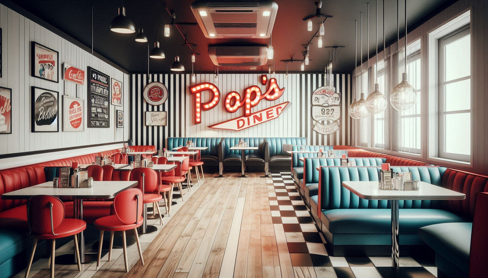

Bem-vindo ao Pop's Diner
Inspirado nos clássicos diners americanos, o Pop's Diner oferece uma experiência única para quem busca nostalgia e sabor. Localizado no coração da cidade, somos famosos por nossos milkshakes, hambúrgueres e um ambiente acolhedor.
Nossa missão é: "Servir felicidade em cada refeição".
Venha nos visitar e experimente o verdadeiro sabor dos anos 50 com um toque moderno.
Nosso Estabelecimento
Estamos localizados no coração da cidade, prontos para recebê-lo!
Por que Escolher o Pop's Diner?
- Ambiente nostálgico e aconchegante
- Localização central
- Equipe qualificada e amigável
- Cardápio diversificado
- Eventos temáticos